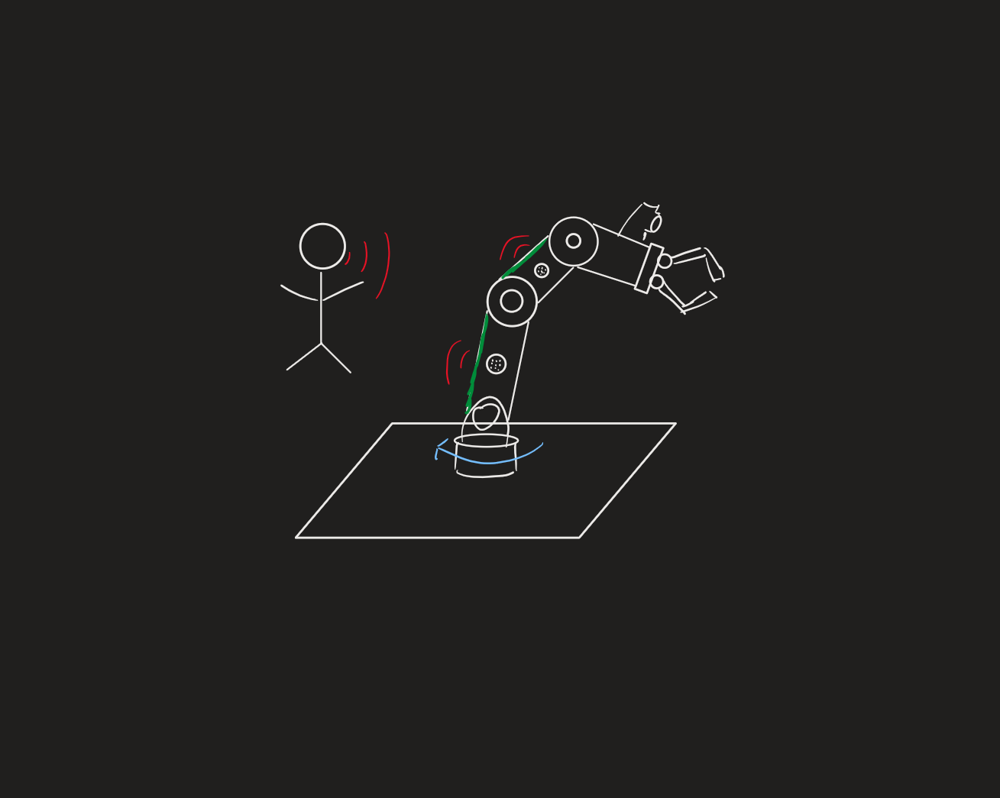

Disney Imagineering senior capstone, Fall 2026 to present. Team of five, $6K budget

A robotic arm (an OpenManipulator-X) with a multi-sensor package that detects its environment and human interactions through sensor fusion, for a robotic character application. The project is in progress. In the research phase I wrote the section on user interactions, which covers how people respond to robot touch and what that means for the arm’s compliance, its responses, and our testing scenarios.